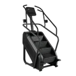

Stair Climber
A cardio machine movement that climbs a revolving staircase step after step, loading the glutes and quads continuously with no landing impact.
Upper legs · Stair Climber · Beginner

Muscles worked by the Stair Climber
Primary
Secondary
Also called: glute, glutes, gluteus maximus, buttocks, butt, quad.
Equipment

Stair ClimberAlso called: stairmaster, stair machine, step mill, stepper, step machine.
How to do the Stair Climber
- Step onto the bottom stair with the machine at its slowest setting and take the rails lightly for balance.
- Climb one step at a time, placing the whole foot on each stair rather than just the toes.
- Stand upright with your chest open and your hips under your shoulders instead of hunching over the console.
- Push the step down through the heel of the front foot, letting the glute of that leg do the work.
- Set the pace so you can hold your posture, and keep climbing for the desired time or number of floors.
Form tips
- Do not lean on the rails or hook your forearms over them — supporting your weight there takes the load off the legs and the readout stops meaning anything.
- Full foot on the step, heel included. Climbing on the toes shifts the whole session into the calves and burns them out early.
- Take one step at a time before you try skipping steps; deliberate, upright climbing beats a fast shuffle at the bottom of the staircase.
At a glance
| Body part | Upper legs |
|---|---|
| Category | Cardio |
| Force type | Push |
| Mechanic | Compound |
| Difficulty | Beginner |
| Equipment | Stair Climber |
| Goals | Endurance |
| Tags | Conditioning, Leg day, Glute focus |
| MET | 8.0 (metabolic equivalent, for calorie estimates) |
| Unilateral | No |
| Bodyweight | No |
| Dataset id | stair-climber |
Stair Climber in German & Spanish
| German | Treppensteiger |
|---|---|
| Spanish | Escaladora de Escaleras |
Descriptions, instructions and tips ship in all three languages in the JSON.
Related exercises
Exercise data (JSON)
The record below is exactly what exercises.json ships for this exercise — names, descriptions, instructions and tips in English, German and Spanish.
{
"id": "stair-climber",
"name_en": "Stair Climber",
"name_de": "Treppensteiger",
"name_es": "Escaladora de Escaleras",
"description_en": "A cardio machine movement that climbs a revolving staircase step after step, loading the glutes and quads continuously with no landing impact.",
"description_de": "Eine Ausdauerübung am Gerät, bei der du Stufe für Stufe eine umlaufende Treppe steigst — Gesäß und Oberschenkel arbeiten durchgehend, ganz ohne Landestoß.",
"description_es": "Un ejercicio de máquina cardiovascular que sube escalón tras escalón por una escalera giratoria, cargando glúteos y cuádriceps de forma continua y sin impacto de aterrizaje.",
"category": "cardio",
"force_type": "push",
"mechanic": "compound",
"difficulty": "beginner",
"equipment": "stair_climber",
"body_part": "upper_legs",
"primary_muscles": [
"gluteus_maximus",
"quadriceps"
],
"secondary_muscles": [
"gastrocnemius",
"gluteus_medius",
"hamstrings",
"soleus"
],
"goals": [
"endurance"
],
"tags": [
"conditioning",
"leg_day",
"glute_focus"
],
"is_unilateral": false,
"is_bodyweight": false,
"instructions_en": [
"Step onto the bottom stair with the machine at its slowest setting and take the rails lightly for balance.",
"Climb one step at a time, placing the whole foot on each stair rather than just the toes.",
"Stand upright with your chest open and your hips under your shoulders instead of hunching over the console.",
"Push the step down through the heel of the front foot, letting the glute of that leg do the work.",
"Set the pace so you can hold your posture, and keep climbing for the desired time or number of floors."
],
"instructions_de": [
"Steig auf der untersten Stufe auf, während das Gerät auf der langsamsten Stufe läuft, und fass die Griffe nur locker zum Gleichgewicht an.",
"Steig Stufe für Stufe und setz den ganzen Fuß auf, nicht nur die Zehen.",
"Bleib aufrecht mit offenem Brustkorb und der Hüfte unter den Schultern, statt dich über die Konsole zu beugen.",
"Drück die Stufe über die Ferse des vorderen Fußes nach unten und lass das Gesäß dieses Beins die Arbeit machen.",
"Wähl das Tempo so, dass du die Haltung halten kannst, und steig die gewünschte Zeit oder Stockwerkzahl weiter."
],
"instructions_es": [
"Súbete al escalón inferior con la máquina en su ajuste más lento y sujeta los raíles con suavidad para equilibrarte.",
"Sube de escalón en escalón apoyando el pie entero en cada uno, no solo la punta.",
"Mantente erguido con el pecho abierto y la cadera bajo los hombros, sin encorvarte sobre la consola.",
"Empuja el escalón hacia abajo con el talón del pie adelantado y deja que el glúteo de esa pierna haga el trabajo.",
"Ajusta el ritmo para poder sostener la postura y sigue subiendo durante el tiempo o el número de pisos deseados."
],
"tips_en": [
"Do not lean on the rails or hook your forearms over them — supporting your weight there takes the load off the legs and the readout stops meaning anything.",
"Full foot on the step, heel included. Climbing on the toes shifts the whole session into the calves and burns them out early.",
"Take one step at a time before you try skipping steps; deliberate, upright climbing beats a fast shuffle at the bottom of the staircase."
],
"tips_de": [
"Stütz dich nicht auf die Griffe und häng die Unterarme nicht darüber — dort dein Gewicht abzugeben nimmt die Last von den Beinen und die Anzeige sagt nichts mehr aus.",
"Ganzer Fuß auf die Stufe, Ferse inklusive. Auf den Zehen zu steigen verlagert die ganze Einheit in die Waden und brennt sie früh aus.",
"Steig erst einzelne Stufen, bevor du welche überspringst; bewusstes, aufrechtes Steigen schlägt ein schnelles Getrippel am unteren Ende der Treppe."
],
"tips_es": [
"No te apoyes en los raíles ni cuelgues los antebrazos sobre ellos — descargar ahí el peso quita trabajo a las piernas y la pantalla deja de significar nada.",
"Pie entero sobre el escalón, talón incluido. Subir de puntillas traslada toda la sesión a los gemelos y los agota pronto.",
"Sube escalón a escalón antes de intentar saltártelos; una subida deliberada y erguida vale más que un trote rápido en la parte baja de la escalera."
],
"met": 8.0,
"images": {
"flat": {
"main": "images/flat/stair-climber-main.webp"
}
}
}Fetch just this exercise
const { exercises } = await fetch(
"https://exercise-dataset.com/exercises.json"
).then(r => r.json());
const ex = exercises.find(e => e.id === "stair-climber");Free for personal and commercial in-app use with attribution (“Exercise data by RepDB”) — see the license and ready-made attribution snippets. Redistributing the data as a dataset or API is not permitted.